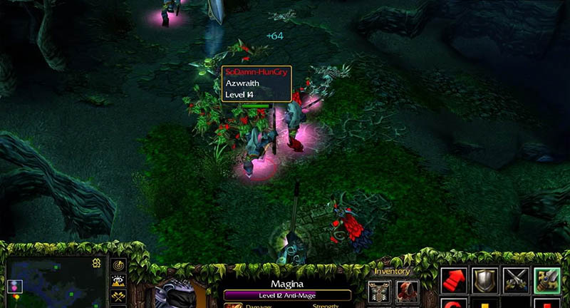
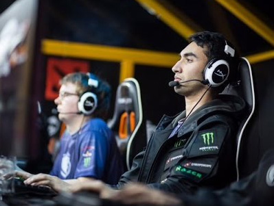
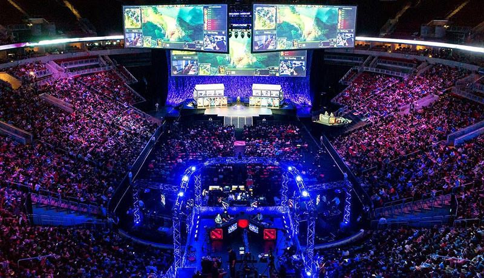

Acerca de Dota 2
Dota 2 es un videojuego gratuito del género MOBA por equipos desarrollado y publicado por la empresa Valve en su propia plataforma digital Steam. Actualmente es el juego más jugado de dicha plataforma, con actualmente un promedio de 600.000 jugadores únicos diarios, y más de 40 millones de jugadores concurrentes.
Defense of the Ancients
Dota surge en el año 2003 con el nombre de Defense of the Ancients (DotA), no como un videojuego de por sí, sino que fue realizado en su totalidad como un mapa para otro videojuego diferente: Warcraft 3. Las herramientas de mapeo de este juego eran muy poderosas y permitía a quien se lo proponía crear niveles multijugador que iban más allá del juego base. Prácticamente se podían crear juegos completamente distintos a Warcraft.
Si bien la comunidad ha creado miles de mapas en el período de gloria de Warcraft, el que más suceso ha conseguido fue DotA. Su nivel de complejidad, competencia y adicción que generaba entre los que lo jugaban logró que sea lo más popular de la época.
Al ser un mapa de la comunidad, nunca se tuvo soporte oficial de parte de nadie. El creador original, apodado Eul, dejó de lado el proyecto en el año 2004. En consecuencia se crearon varios "Spin-offs", pero el único que tuvo éxito fue DotA Allstars, por el mapeador Guinsoo, el cual introducía mecánicas mejoradas y nuevos héroes al mapa original. Lamentablemente, dos años más tarde anunció su retiro y dejó el desarrollo del mapa a IceFrog, quien más adelante es contratado por Valve para el desarrollo de Dota 2.
DotA actualmente sigue teniendo soporte y es actualizado por el mismísimo IceFrog, a la par de Dota 2.
Dota 2 en la actualidad
En el año 2011 la empresa Valve anunció el desarrollo de Dota 2 junto a IceFrog. Estuvo en Beta cerrada por 2 años, donde había que comprar una key para poder jugar. Finalmente el 9 de Julio del 2013 se lanzó la versión final, completamente gratuita.
El juego tuvo que hacerse desde cero: no podía reciclarse nada del mapa original porque tanto los modelos, sonidos e incluso los nombres de los héroes que utilizaba DotA eran propiedad de Blizzard, la compañía desarrolladora de Warcraft.
Sin dudas fue un salto gigantesco comparado a su predecesor. El motor gráfico Source, que es el que usa Valve para sus juegos, permite gran flexibilidad y manipulación, por lo cual se pudieron introducir mecánicas y funcionalidades que jamás se podrían aplicar en DotA.
{kind=link}
{kind=link}
{kind=link}
E-Sports
Dota 2 introdujo un nuevo paradigma al mundo de los videojuegos: el de los Electronic Sports (Deportes electrónicos).
Al ser un juego muy competitivo, se vio la posibilidad de hacer eventos donde equipos compitan a modo de torneo con un premio final. Esto creció hasta llegar a hacer eventos internacionales por premios millonarios.
The International
Dota 2 cuenta con The International, donde una vez al año los mejores equipos del mundo compiten en un torneo realizado en Seattle y es transmitido en vivo durante toda la semana que dura el mismo. Meses antes de este evento los usuarios pueden comprar cosméticos e items digitales de edición limitada con dinero real. Una parte de ese dinero va al premio final del torneo que se acumula con las compras de los usuarios de todo el mundo.
Un objeto muy popular que se vende en las épocas del International es el llamado 'compendium', que es un libro digital con fotos, información y horarios del evento en sí y los equipos. Además, permite tener acceso a cosméticos únicos para el juego y la posibilidad de predecir los equipos ganadores de cada fase, a modo de prode.
Valve también incita a cooperar para el premio final proponiendo diferentes metas, que generalmente son adiciones al juego, si se llega a cierta cantidad de dinero.
El premio acumulado del International del 2016 fue de más de 20 millones de dólares, el cual el equipo ganador recibió 6 millones. Actualmente es el torneo de E-Sports más grande del mundo y con el premio más alto.
